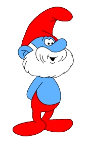
1958 - De smurfen worden gecreëerd in een avontuur van Johan en Pirrewiet als bijfiguur
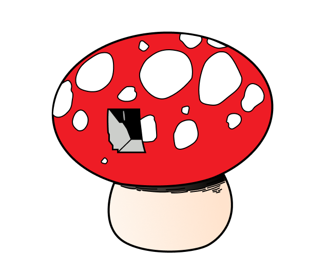
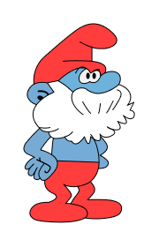
1959 - De smurfen zijn een groot succes en krijgen hun eigen smurfenavontuur in een magazine
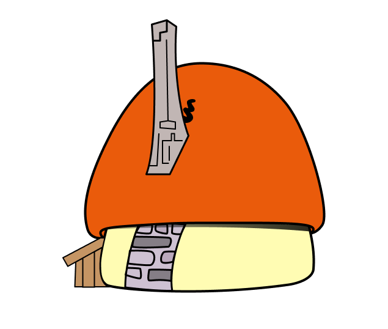
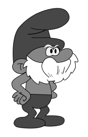
1960 - De eerste korte film "Les Schtroumpfs Noirs" wordt geproduceerd door TVA
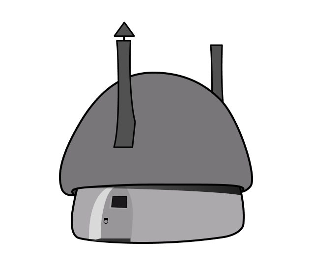
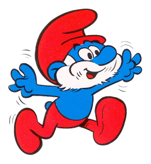
1975 - Eerst lange speelfilm wordt uitgebracht gebaseerd op 'De Smurfen en de Toverfluit'
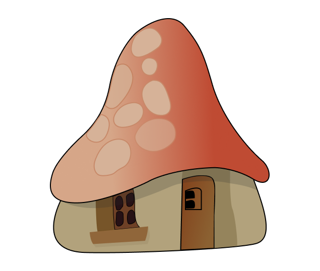
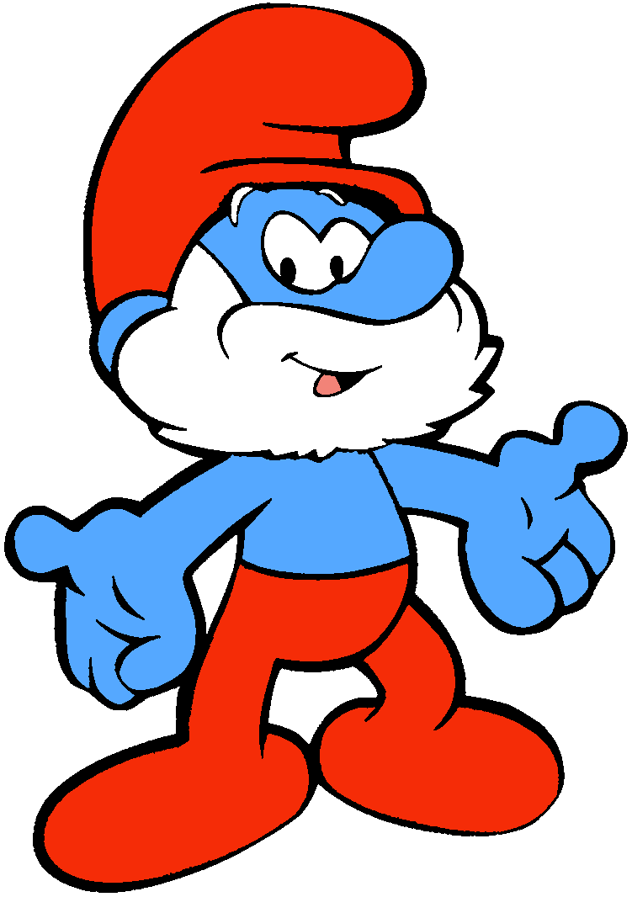
1981 - De eerste aflevering van de tv-serie van de smurfen wordt uitgezonden op NBC
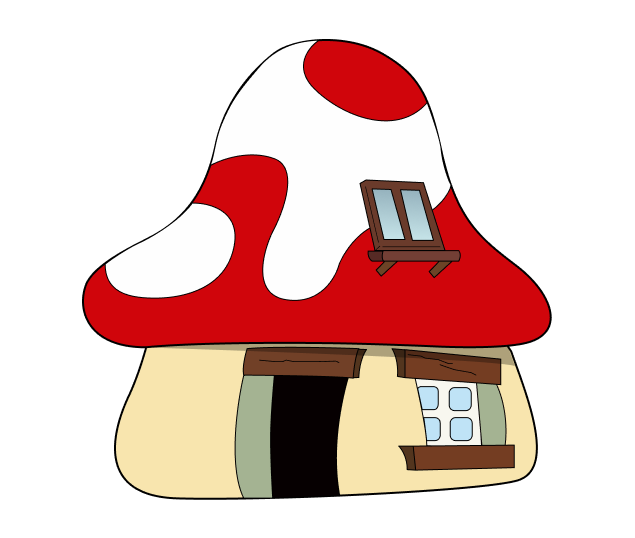
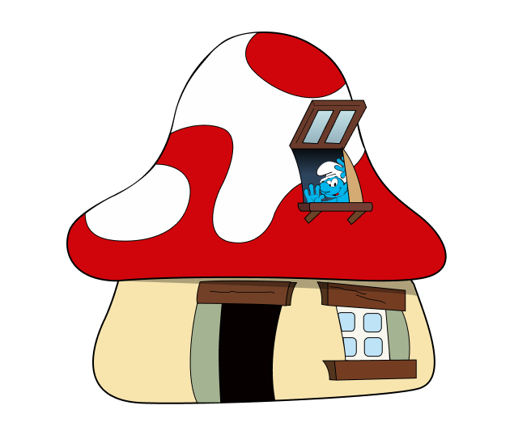
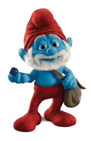
2011 - De eerste 3D bioscoopfilm "The Smurfs" is te zien in bioscopen

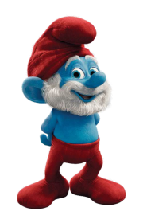
2013 - De tweede 3D bioscoopfilm "The Smurfs 2" wordt uitgebracht, ook is smurfendag ontstaan
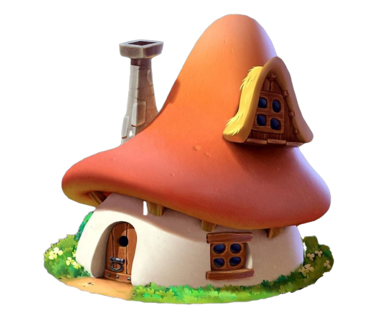
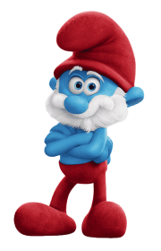
2017 - Geanimeerde smurfenfilm "Smurfs: The Lost Village" is te zien in bioscopen
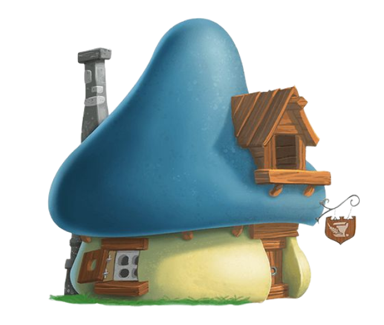
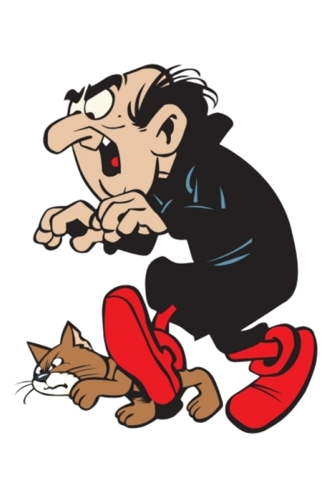